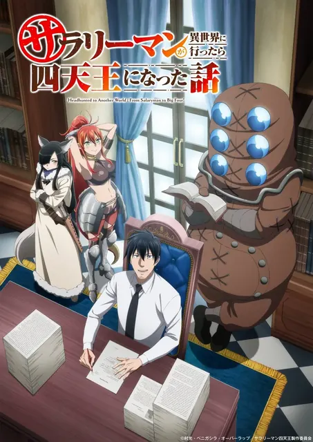
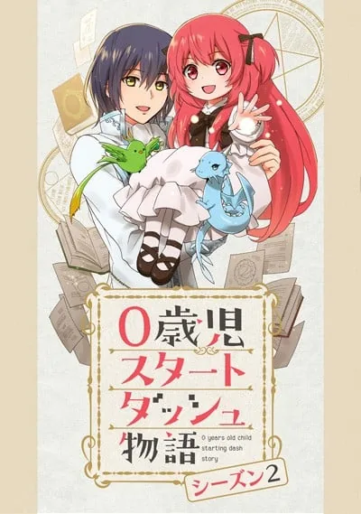

003我独自升级 第二季 -起于暗影-俺だけレベルアップな件 Season 2 -Arise from the Shadow-TV · 13话 · 2025-01-04 · 漫画改TV · 13话 · 01-04 · 漫画改奇幻冒险7.49680
004超超超超超喜欢你的100个女朋友 第二季君のことが大大大大大好きな100人の彼女 第2期TV · 12话 · 2025-01-12 · 来源未知TV · 12话 · 01-12 · 来源未知喜剧恋爱7.47123
006魔法使光之美少女!!~未来之日~魔法つかいプリキュア!!~MIRAI DAYS~TV · 12话 · 2025-01-11 · 原创动画TV · 12话 · 01-11 · 原创动画奇幻战斗7.2444
007Re:从零开始的异世界生活 第三季 反击篇Re:ゼロから始める異世界生活 3rd season 反擊編TV · 8话 · 2025-02-05 · 轻小说改TV · 8话 · 02-05 · 轻小说改恋爱奇幻7.07488
008在冲绳喜欢上的女孩方言讲得太过令人困扰沖縄で好きになった子が方言すぎてツラすぎるTV · 12话 · 2025-01-04 · 漫画改TV · 12话 · 01-04 · 漫画改恋爱校园7.02830
017卡片战斗先导者 Divinez Deluxe篇カードファイト!! ヴァンガード Divinez デラックス編TV · 13话 · 2025-01-11 · 原创动画TV · 13话 · 01-11 · 原创动画6.354
023魔法制造者 ~异世界魔法的制作方法~マジック・メイカー ~異世界魔法の作り方~TV · 12话 · 2025-01-08 · 轻小说改TV · 12话 · 01-08 · 轻小说改恋爱奇幻5.61442
028虽然是公会柜台小姐,但是因为讨厌加班所以要去单挑BOSSギルドの受付嬢ですが、残業は嫌なのでボスをソロ討伐しようと思いますTV · 12话 · 2025-01-10 · 轻小说改TV · 12话 · 01-10 · 轻小说改恋爱奇幻5.43254
031我和班上最讨厌的女生结婚了。クラスの大嫌いな女子と結婚することになった。TV · 12话 · 2025-01-03 · 轻小说改TV · 12话 · 01-03 · 轻小说改喜剧恋爱5.33447
032想星的大天使 Myth of Emotions想星のアクエリオン Myth of EmotionsTV · 12话 · 2025-01-09 · 原创动画TV · 12话 · 01-09 · 原创动画恋爱科幻5.3255
036脱离了A级队伍的我,和从前的徒弟们前往迷宫深处。Aランクパーティを離脱した俺は、元教え子たちと迷宮深部を目指す。TV · 24话 · 2025-01-11 · 轻小说改TV · 24话 · 01-11 · 轻小说改奇幻科幻5.11318
038上班族去了异世界后成了四天王サラリーマンが異世界に行ったら四天王になった話TV · 12话 · 2025-01-06 · 来源未知TV · 12话 · 01-06 · 来源未知恋爱奇幻5.01064
044S级怪兽《贝希摩斯》被误认成小猫,成为精灵女孩的骑士(宠物)一起生活Sランクモンスターの≪ベヒーモス≫だけど、猫と間違われてエルフ娘の騎士(ペット)として暮らしてますTV · 12话 · 2025-01-04 · 来源未知TV · 12话 · 01-04 · 来源未知奇幻冒险4.61248
0460岁儿童开始冲刺的故事 第二季0歳児スタートダッシュ物語 シーズン2TV · 12话 · 2025-01-05 · 漫画改TV · 12话 · 01-05 · 漫画改恋爱奇幻4.545
056最弱技能《果实大师》 ~关于能无限食用技能果实(吃了就会死)这件事~外れスキル《木の実マスター》 ~スキルの実(食べたら死ぬ)を無限に食べられるようになった件について~TV · 12话 · 2025-01-07 · 来源未知TV · 12话 · 01-07 · 来源未知奇幻冒险3.7942
057虽然我是注定没落的贵族,闲来无事只好来深究魔法没落予定の貴族だけど、暇だったから魔法を極めてみたTV · 12话 · 2025-01-06 · 轻小说改TV · 12话 · 01-06 · 轻小说改奇幻冒险3.7803
003机动战士高达 跨时之战機動戦士Gundam GQuuuuuuX -Beginning-MOVIE · 1话 · 2025-01-17 · 原创动画MOVIE · 1话 · 01-17 · 原创动画科幻冒险6.74064
004世界计划 无法歌唱的初音未来劇場版プロジェクトセカイ 壊れたセカイと歌えないミクMOVIE · 1话 · 2025-01-17 · 来源未知MOVIE · 1话 · 01-17 · 来源未知奇幻音乐6.21728